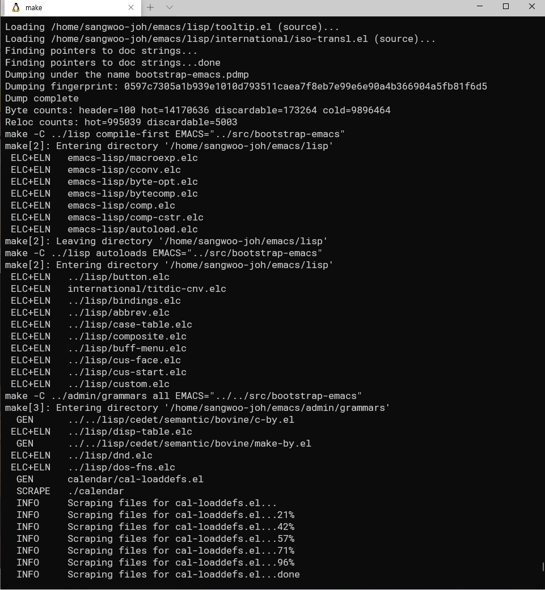
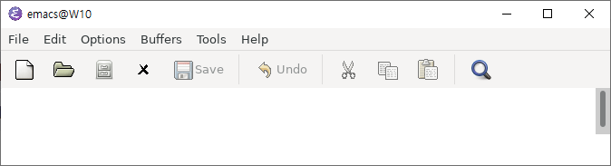
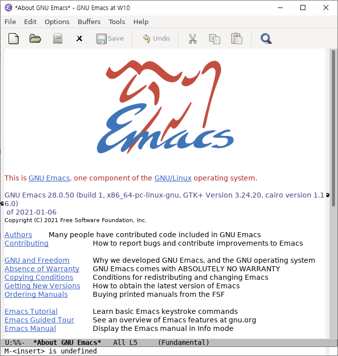
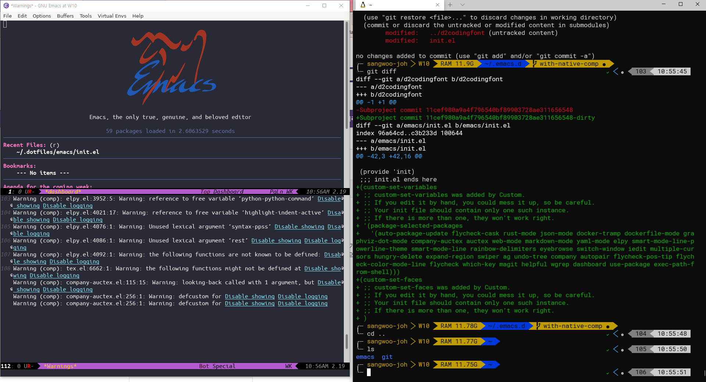

WSL 2 + Emacs 28 (성공)
진정한 리눅스는 맥이 아니라 윈도우다
감사하게도 회사에서 코드 리뷰와 관련된 교육을 듣게 되었다. 코로나로 인해 재택으로 진행되는데, 실습도 있는 과정이다. 하지만 집에 있던 맥북은 팔아버렸고 만자로 설치는 실패했었기 때문에, 이번에는 얌전히 윈도우에서 Cygwin과 VS Code로 개발하려고 했었다. 그런데 문득 끈닷넷님이 WSL 2와 윈도우 터미널을 사용한 경험을 공유했던게 생각나서, 이참에 나도 WSL 2 환경을 꾸려 보기로 했다. 결과는 보시다시피 성공적이다. 마이크로소프트 만세. 그리고 머신도 환경도 없이 원격 디버깅에 큰 도움을 주신 끈닷넷님에게 심심한 감사의 말씀을 보낸다.
WSL 2
연구실에 있을 무렵에 이미 WSL를 시도했었다. 그때는 개발자 모드에서만 해금 가능한 숨겨진 기능이었고, 시스템 콜도 제대로 지원 안되는게 많았고, 윈도우와 파일 시스템이 달라서 성능이 굉장히 떨어지는, 그냥 재미로 쓸 수 있는 물건이었다. 그때도 VcXsrv 통해서 이맥스를 켤 순 있었지만 말 그대로 켤 수만 있었고 많은 기능을 (시스템 콜의 부재로 인해) 사용할 수 없었다.
그런데 이번에 새롭게 써본 WSL 2는 정말 장족의 발전을 이룬 대단한 물건이었다.
- 일단 설치가 쉽다. 파워쉘 커맨드 몇 줄로 금방 설치할 수 있었다.
- 심지어 기존에 깔아둔 WSL 1 버전의 Ubuntu를 지우고 새로 설치할 필요도 없이 커맨드 하나로 버전 업그레이드가 가능했다. 역시 하위 호환성의 대가 마이크로소프트.
- WSL1과 비교글에 따르면 (1) 파일 시스템 성능이 향상되었고 (2) 시스템 콜을 전부(!) 지원한다고 하는데, 이게 정말 엄청나게 체감되었다. 일단 내 Linux 설정을 다 사용할 수 있었고, 패키지를 받고 설치하거나 직접 빌드하는 속도가 예전에 비해 10배는 빨라진 기분이다.
“윈도우에서 리눅스 할 수 있어” 라는 문장이 예전엔 장난같은 느낌이었는데, WSL 2가 탑재된 지금은 웬만한 취미 코딩은 무리없이 다 할 수 있고 여기에 머신만 받쳐준다면 업무도 가능한 수준으로 강력한 [힘]이 느껴진다. 인텔이 추락하고, 암드가 인텔을 데스크탑 점유율에서 이기고1, 애플 머신에 ARM이 탑재되더니, 급기야 윈도우에서 full 리눅스를 돌릴 수 있게 되었다. 역시 세상은 변한다.
진짜 리눅스를 쓰고 싶으면 맥OS보다는 차라리 윈도우를 쓰는 것이 맞다. by kkeun.net
고군분투 Emacs
리눅스 환경은 WSL 2로 든든하게 해결했지만 의외로 발목을 잡은 것은
이맥스였다. WSL 설정 후, 최근 일이라 관성과 네이티브 뽕맛(…)을 잊지
못하고 네이티브 이맥스 28을 준비하기 시작했고
빌드, make install 까지 아주 스무스하게 진행되었다.

하지만 역시 세상은 호락호락하지 않았다. 이맥스를 구동하자마자 흰 화면에서 더이상 넘어가지 않았다.

Ctrl-x Ctrl-c로 종료되는 걸로 봐서 실행은 되고 있지만 폰트 렌더링이
안되는 것 같았다. 흐음. 혹시 X 환경을 쓰는 어플리케이션 전부가 안되는
것인가 싶어서 gedit과 xeyes를 켜봤지만 얘네는 잘 되었다. 이맥스만
안되었다. 흐으으음.
비록 VS Code가 생각보다 좋아서2 쓸 만 하긴 했지만, 눈 앞에서 대답없는 이맥스를 보고 있으니 윈도우에서 이맥스를 네이티브로 돌리고야 말겠다는 욕심과 오기가 생기기 시작했다. 그리고 곧바로 나의 구루 끈닷넷 님에게 이 상황을 공유하고 문제를 파악하기 시작했다.
- 일단 X가 이상한 것 같아서 VcXsrv 로그를 살펴보았고 에러 로그로 검색해보니 뭔가 안된다는 글이 있었다. 정확히 같은 증상은 아니지만 2020년 4월까지도 안되었기 때문에, 사실 이 글을 발견한 순간에는 (귀찮아서) 그냥 WSL 에서 만족할까 하는 생각이 들었었다.
- 하지만 끈닷넷님은 이 상황을 해결할 수 있다고 보았고 하나씩
물어봐주셨다. 일단 직접 빌드한 이맥스 28 버전 이슈일 수 있으므로
apt-get 으로 패키지를 설치해서 시도해보라고 하셨지만 문제는
해결되지 않았다. 아무래도 이맥스 28을 빌드하고
make install로 설치하면서 같이 깔린 자갈(?)들에 apt-get 패키지 이맥스가 걸려 넘어지는 것이 아닌가 싶다고 추측하셨다. - 만자로가 실패했듯 왠지 내 데스크탑만의 문제일 수도 있을 것 같아서 WSL 2에 우분투 18.04 를 깔고 apt-get 패키지로 이맥스를 깔아보았더니 잘 되었다. ???? 우분투 18.04 에서는 잘 되고 우분투 20.04 에서는 안되다니, 정말로 내 머신의 하드웨어 이슈일까? 그런데 고작 LTS 버전 하나 차이나는데 이렇게 하위 호환이 안되는 게 말이 되나? 진짜 하드웨어 이슈라면 우분투 18.04에서 이맥스 28을 빌드해서 써보면 알겠지 싶어 시도해보았고 똑같은 현상을 마주하였다. 흐음.
- 이것저것 시도해보니 조금 더 상황을 정확하게 파악할 수 있었는데, (우분투 버전과 상관없이) 이맥스 25는 안되고 이맥스 26, 27, 28은 다 안되었다. 여기까지 알아낸 상황을 끈닷넷님과 공유하고 잠자리에 들었다.
- 그 사이 끈닷넷님이 우리는 혼자가 아니라는 것을 알아내었다!
결과적으로 이맥스 버전 이슈가 맞았고 여기에 추가로 VcXsrv의 버전 이슈도 섞여있었다. 이맥스 26 부터는 Double Buffering 기능을 지원하는데, VcXsrv 1.20.1.2 버전 미만에서는 이 기능을 지원하지 않았던 것이다. 과연 내 머신에 깔린 VcXsrv는 1.18.xx 버전이었고, 최신인 1.20.9.0으로 설치하니 성공적으로 이맥스가 구동되었다. 예이!


사실 그냥 우분투 깔면 다 한번에 해결되는 것인데 (…) 오기로 여기까지 오게 되었다. 윈도우에서 이맥스를 네이티브로 돌리고야 마는 이 묘한 쾌감을 이해하는 사람이 세상에 (끈닷넷님 이외에) 몇이나 될런지.
그리고 이 글은 당연하게도 Windows 버전 2004(OS 빌드 1904.685)에 설치된 WSL 2 기반의 Ubuntu 20.04에 설치된 Emacs 28 native elisp compilation 에서 작성되었다.
이렇게 또 하나 씩 배워간다.
-
이맥스 키 바인딩 플러그인과 magit 플러그인이 생각보다 잘 되어 있었다. 특히 magit을 VS Code에서 쓰게 될 줄은 몰랐다. ↩